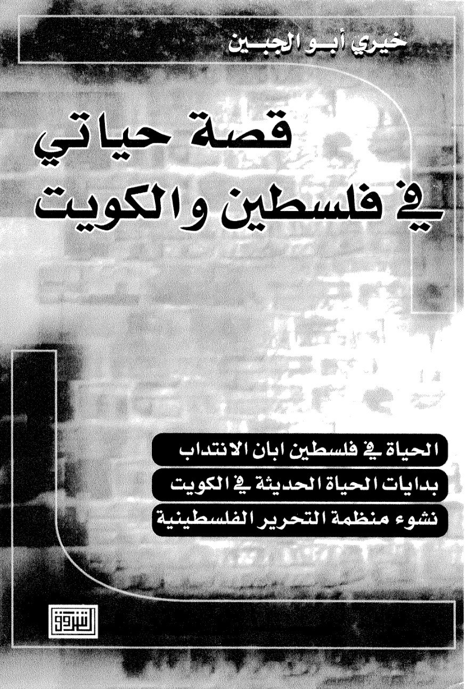

1950s to 1980, memoir · Book pages, Khairi Abu Al-Jubain, Qissat Hayati fi Filastin wal-Kuwait, Dar Al-Shorouk
Khairi Abu Al-Jubain’s memoir: Jassim Al-Qatami in sport, the 1959 speech, the Foreign Ministry and the first National Assembly
What it is
The memoir of Khairi Abu Al-Jubain, a Palestinian who worked in Kuwait and served with Jassim Al-Qatami on the sports bodies. 1. Jassim Al-Qatami was president of the first Kuwaiti Olympic Committee and the first president of the Kuwait Football Association, holding both posts, and headed the board of the Sports Union, with Abu Al-Jubain as secretary general (pages 171, 175 and 178). 2. With Muhalhil Al-Mudhaf he was a pioneer of Kuwaiti sports journalism, through the sports column they wrote in Al-Ba’tha from Cairo in the 1940s (page 182). 3. On 1 February 1959, at the celebration in the Shuwaikh Secondary stadium of the first anniversary of the union of Egypt and Syria, his speech was so fiery that the government arrested him, later releasing him, and dissolved the sports clubs and unions (pages 177 and 195). 4. He was later appointed Under Secretary of the Foreign Ministry, then in Nuzha (page 200), and was one of the two deputy speakers of the first National Assembly with Saud Al-Abdulrazzaq (page 201). 5. In 1980 he spoke, as former deputy speaker and president of the Arab Organization for Human Rights, at the memorial for Ahmed Al-Shuqairi (page 261).
Why it matters
An eyewitness account by a colleague of Jassim Abdulaziz Al-Qatami’s founding role in Kuwaiti sport and of the 1959 speech that led to his arrest.
Page copies


Notes
Only the first pages are shown here. Family members who sign in can see all 10 pages.
Sources
Khairi Abu Al-Jubain, Qissat Hayati fi Filastin wal-Kuwait, Dar Al-Shorouk, pages 171, 175, 177, 178, 182, 195, 200, 201 and 261
How this text was made: Page 201 says the first National Assembly’s two deputy speakers were Saud Al-Abdulrazzaq and Jassim Al-Qatami; this is the author’s memory. Page 175 ends mid-sentence and page 176 was not sent. The year of publication is not on the pages sent.
Open in the interactive site